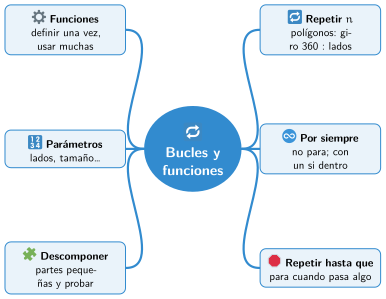

Bloque II · Programar con bloques
UD06 Bucles y funciones
Sesiones
- Sesión 6.1 Repetir un número de veces
- Sesión 6.2 Por siempre y repetir hasta
- Sesión 6.3 Bucles y condiciones: un juego
- Sesión 6.4 Tus propios bloques: las funciones
- Sesión 6.5 Dividir un problema en partes
Al terminar la unidad
Mapa mental de la unidad

✏️ Repasa la unidad con el mapa: tapa una rama y explica en voz alta lo que pone.